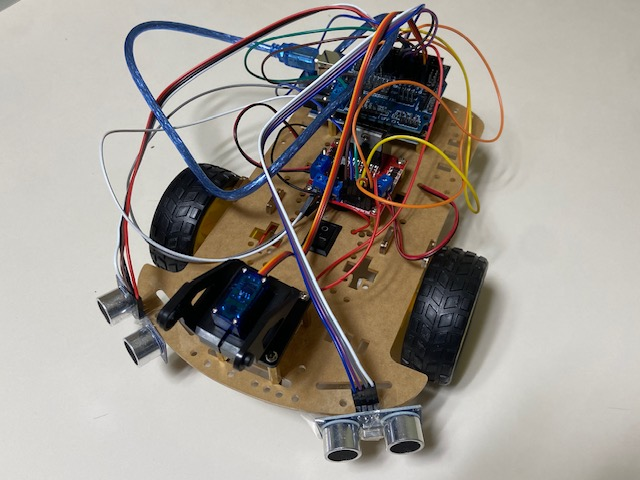
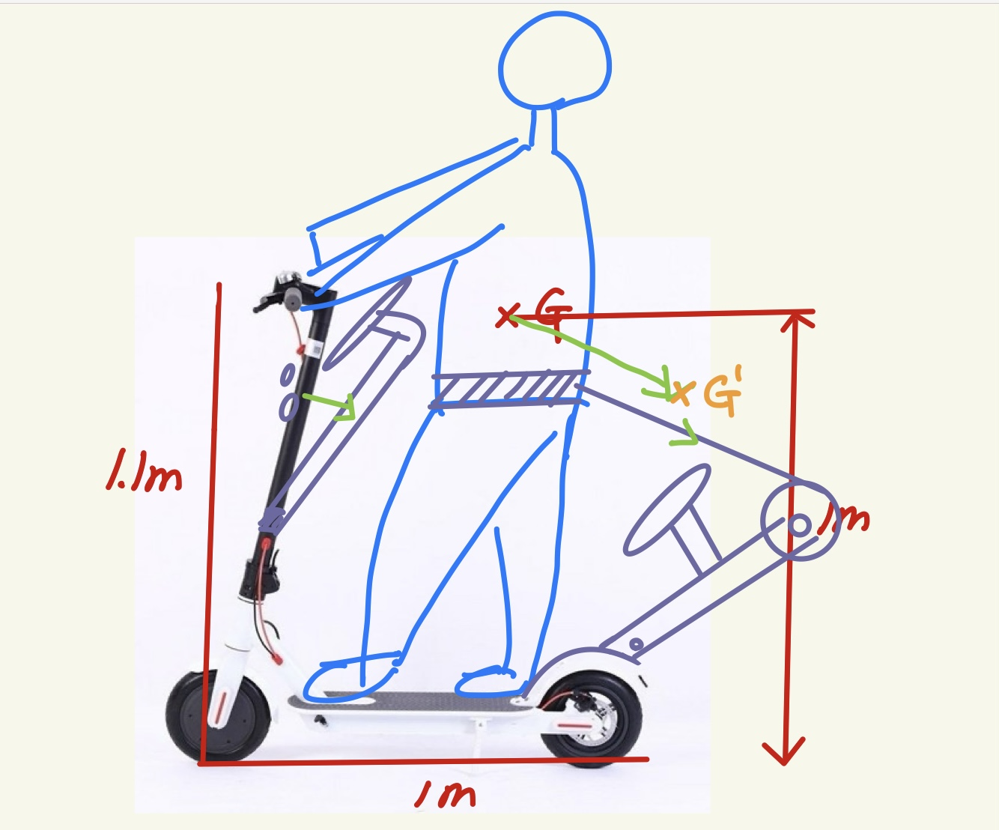

The ROBOTICS LAB
Welcome to the Robotics Lab

Route Finder
This robot is made to find paths by using ultrasonic sensors.
Three sensors can recognize obstacles that hinder it from moving forward.

Scooter Safety Belt
This improves scooter safety.
A high center of mass is the main reason scooters overturn during accidents.
The safety belt can help the driver avoid overturning by pulling them backward before a crash.